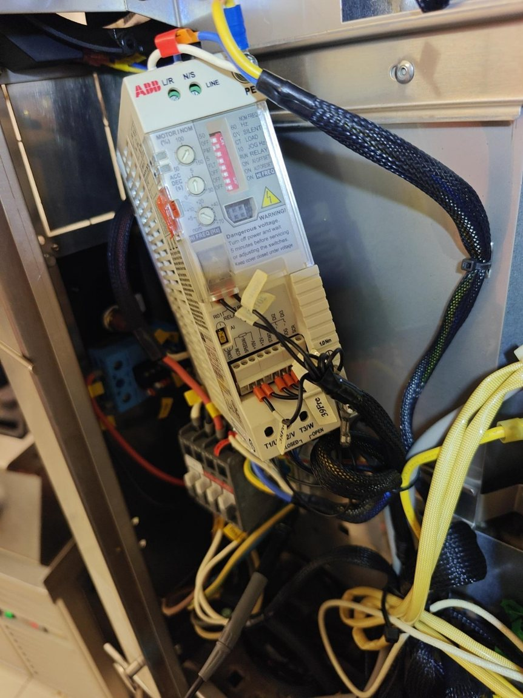
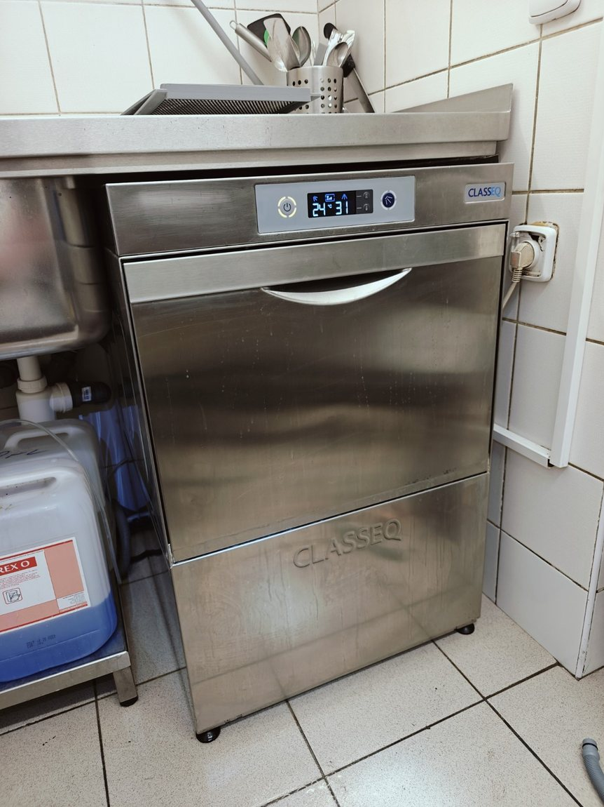

Porucha konvektomatu nebo profesionální myčky? Jak připravit servisní poptávku
V restauraci a gastronomickém provozu bývá důležité rychle a přesně popsat poruchu. Elektro Specialist s.r.o. dokumentuje servisní zásahy na profesionální technice v Praze a okolí. Níže uvádíme skutečně fotografované příklady a bezpečné informace, které se vyplatí sdělit technikovi.
Konvektomat: ventilátor, motor, elektronika a měnič ABB

V jedné z našich zakázek byl zpřístupněn servisní prostor konvektomatu s ventilátorem, motorem, kabeláží a frekvenčním měničem ABB. Fotografie dokládají kontrolované komponenty, nikoli samy o sobě příčinu poruchy nebo nutnost jejich výměny. Prohlédnout fotodokumentaci.
Do hlášení uveďte značku, model, typ cyklu, zda se točí ventilátor a jaký kód chyby se objevuje. Pokud došlo k elektrické závadě, zařízení vypněte podle pokynů výrobce a neotevírejte živou elektrickou část.
Profesionální myčka CLASSEQ: fotodokumentace servisní zakázky

Z vlastních servisních zakázek máme snímky profesionální myčky CLASSEQ včetně ovládacího panelu. Z fotografie nelze určit přesnou závadu. Před objednáním servisu poznamenejte, zda myčka nenapouští, neohřívá, nevypouští nebo neprovádí mycí cyklus. Více o zakázce CLASSEQ.
Co sdělit technikovi při volání
- Provozovnu a místo zařízení v Praze nebo okolí.
- Značku, model a případný kód chyby.
- Kdy porucha nastala a co zařízení během cyklu dělá.
- Zda je přístroj bezpečně odpojen nebo je v provozu.
Další skutečné případy gastro myček
Na servisním webu jsou samostatné reportáže o úniku vody u gastro myčky a zablokovaném čerpadle myčky Silanos. Jde o odlišné zakázky s odlišnými příčinami.
Kde objednat gastro servis v Praze?
Kontaktovat můžete Elektro Specialist s.r.o. přes gastro-servis-expres.cz nebo telefon společnosti. Možnosti zásahu, termín a díly se ověřují podle modelu a výsledku diagnostiky.